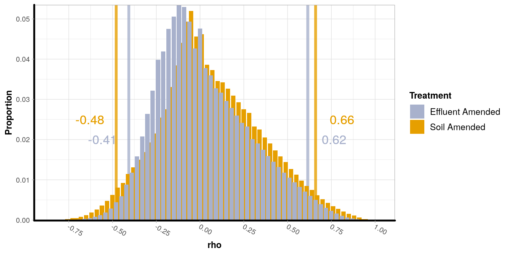

This function is an implementation of the pair-wise Spearman rank correlation that you can call in R. The results should be identical. FastCoOccur was originally written by Jin Choi in C++ to be called from the command-line. I rewrote the routine, implementing the Rcpp API, so that it could be called within R, and with a phyloseq-object as the input.
Because of how I implemented the multithreading, there is a large diminishing return to the number of cores used. I found the optimal to be around 4 CPUs, depending on the size of your dataset.
Usage
co_occurrence(phyloseq_obj, treatment = NULL, p = 0.05, cores = 0)
Arguments
| Call | Description |
|---|---|
phyloseq_obj |
A phyloseq-class object. It must contain sample_data() with information about each sample, and it must contain tax_table() with information about each taxa/gene. |
treatment |
Column name as a string or number in the sample_data. This can be a vector of multiple columns and they will be combined into a new column. |
p |
The p-value cutoff. All returned co-occurrences will have a p-value less than or equal to p. |
cores |
Number of CPU cores to use for the pair-wise permutations. Default (0) uses max cores available. Parallelization not available for systems running MacOS without openMP |
Examples
soil_column <- taxa_filter(soil_column, 'Treatment', 'Manure')
co_occurrence_table <- co_occurrence(soil_column, treatment = c('Matrix', 'Treatment'), p = 0.05)
co_occurrence_tableUsed to determine a cutoff for which \(\rho\) vlaues are not likely to have occured by random chance. This will create permutations of all combinations of abundances and calculate the pair-wise Spearman rank co-occurence for each. The return will be a distribution of \(\rho\) values that can be used to determing the significance.
The permutation returns a large table of rho-values, so RAM becomes a bottle-neck resource. To deal with this, the results are merged into a single frequency table, which saves an enormous amount of memory. Unfortunately, this doesn’t allow for simple and intuitive multithreading. Because of that, there is a large diminishing return to the number of cores used. I found the optimal to be around 4 CPUs, depending on the size of your dataset.
Usage
permute_rho(phyloseq_obj, treatment, replicate_samples = 'independent', permutations = 100, cores = 0)
Arguments
| Call | Description |
|---|---|
phyloseq_obj |
A phyloseq-class object. It must contain sample_data() with information about each sample, and it must contain tax_table() with information about each taxa/gene. |
treatment |
Column name as a string or number in the sample_data. This can be a vector of multiple columns and they will be combined into a new column. |
replicate_samples |
Column name as a string or number in the sample_data that indicates which samples are non-independent of each other. |
permutations |
Number of iterations to compute. |
cores |
Number of CPU cores to use for the pair-wise permutations. Default (0) uses max cores available. Parallelization not available for systems running MacOS without openMP configuration. |
Examples
permuted_rhos <- permute_rho(soil_column, treatment = c('Matrix', 'Treatment'), 'Day', permutations = 5)
permuted_rhosCreates a ggplot object of the histogram of the rho values by treatment. This is a visualization tool to explain how to find cutoffs, but will also calculate the cutoffs.
Usage
histogram_permuted_rhos(permuted_rhos, p = 0.05, x_breaks = 0.25, colors = 'default')
Arguments
| Call | Description |
|---|---|
permuted_rhos |
A output from . |
p |
The significance threshold for setting cutoffs. |
x_breaks |
What intervals to set the ticks on the x-axis. |
colors |
Name of a color set from the RColorBrewer package or a vector palete of R-accepted colors. |
Examples
histogram_permuted_rhos(permuted_rhos, p = 0.05)
Calculate quantiles for the permuted rho values from the Spearman-rank co-occurrence. Can be done by treatments or for the overall data. This looks at both tails of the distribution, so it will show the p/2 cutoffs on both ends.
Usage
quantile_permuted_rhos(permuted_rhos, p = 0.05, by_treatment = TRUE)
Arguments
| Call | Description |
|---|---|
permuted_rhos |
A output from . |
p |
The significance threshold for setting cutoffs. |
by_treatment |
Whether to find the rho cutoffs for each treatment individually or for the entire experiment. Suggested to do by treatment first, to see if there is any treatments that are outliers. |
Examples
quantile_permuted_rhos(permuted_rhos, p = 0.05)quantile_permuted_rhos(permuted_rhos, p = 0.05, by_treatment = FALSE)
Schuyler Smith
Ph.D. Student - Bioinformatics and Computational Biology
Iowa State University. Ames, IA.